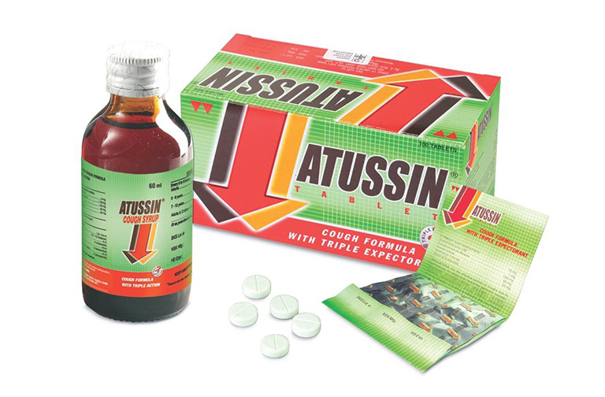

Thông tin về sản phẩm
-
Tiều trị các tình trạng viêm phổi, viêm họng, viêm phế quản, ho do cảm
cúm, ho gà, viêm thanh quản,...
-
Thuốc được bào chế dưới dạng siro, phù hợp với cả trẻ sơ sinh và trẻ
em
-
Atussin siro là loại thuốc trị ho không gây nghiện, có công dụng làm
long đàm và giãn phế quản.
- Thuốc ho Atussin siro điều trị long đàm
theo 3 hướng, bao gồm ho dị ứng,ho khan, ho có đàm.
